Introduction
In the design phase, we take everything we learned in analysis and plan the solution — before writing any code. Two things get designed:
- what the program will look like — the user interface, designed with a wireframe
- how the program will work — the algorithm, designed with a design notation
Skipping design and diving straight into code feels faster, but normally leads to inefficient, unreadable, or incorrect code.
Key Terms
- Ddentify each design notation.
- Read, Understand and identify aspects of the design, such as conditions, loops, data types, program output, logic erros, etc
- Design solutions using any of the 3 design notations (although Psuedocode is recommended)
- Design a user interface/wireframe based on functional requirements
- Evaluate a design and/or user interface.
User-Interface Design — Wireframes
A user is anyone operating the program, and the user interface is everything they interact with. Think about Netflix: you browse shows, read details, press play — all through its interface. You never see the code underneath, and you don't need to.
Here's the clever bit: you've already done most of the work for your UI design during analysis. The inputs tell you what the user needs to enter, and the outputs tell you what the program needs to display. A wireframe is just those inputs and outputs arranged on the screen.
There are two kinds of interface you can design:
- Form-based (graphical) — the user interacts with on-screen controls: entry boxes, buttons, radio buttons, drop-down menus and so on. Think of an app on a phone.
- Text-based — the program prints a prompt, the user types a response, and results appear as lines of text. Think of a program running in the Python shell.
A wireframe can be hand-drawn or made with software, and should show:
- the position of every input and output on the screen
- what each part does — either label each box with a message explaining what is needed ("Enter the number of adult tickets"), or annotate the design with notes pointing at each part
Back on the analysis page we broke the Edinburgh Castle ticket desk problem into its functional requirements:
| Inputs | Number of adult tickets, number of child tickets |
| Processes | Calculate the total cost (adults × 19.50 + children × 11.50) |
| Outputs | Display the total cost of the booking |
That analysis is the shopping list for the UI: the design must give the user somewhere to enter each input, and somewhere to read each output. Here is the same program designed both ways.
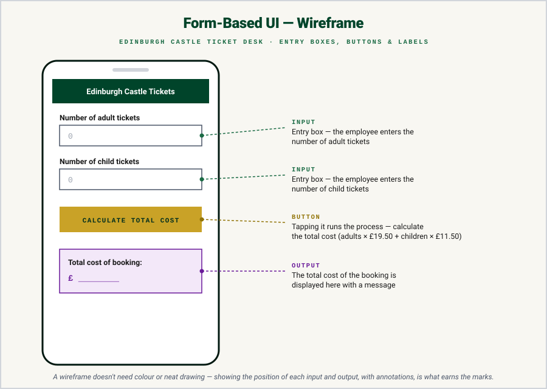
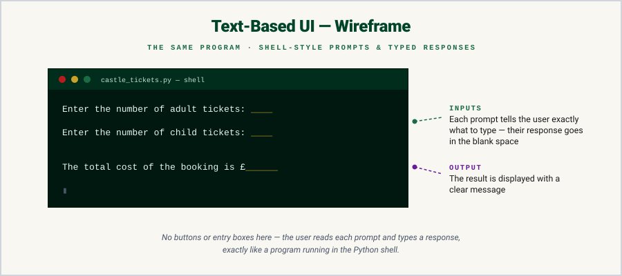
These 2 designs are perfectly valid for this question. Notice that both wireframes show every input and output from the table, clearly positioned and explained, that's what a UI design question is marked on.
Here are 2 Past Paper questions, read it and sketch your own answer before opening the walkthrough.
![Past paper question: a cinema is developing an app to survey customers as they leave. Staff will use a touchscreen on a tablet to input and submit the responses. Customers are asked: which of the two films currently showing did you see, what score would you give the film from 1 to 5, and did you purchase food in the cinema. As many customers as possible should be surveyed, and answers must be input as quickly as possible using a touchscreen. Using the information above, design a user interface for this part of the app. 4 marks.](../resources/sdd/worked_examples/n5_ui_q1.png)
How to tackle it: The command is design a user interface, so our answer is a drawing of a screen, not an algorithm. Before sketching anything, we look through the question for clues about what kind of interface is needed. Two jump out: "Staff will use a touchscreen on a tablet" and answers must be input "as quickly as possible". That means a form-based UI where every answer is a tap. Nothing should need typed.
Then we identify inputs & outputs (including any processes) from the questions given. It is roughly a mark each:
- Which film? — INPUT - one button per film (there are only two showing).
- Score from 1 to 5 - INPUT — five numbered buttons to tap.
- Food purchased? - INPUT — Yes / No buttons.
- Submit - PROCESS — a button to submit the answers / move on to the next customer.
Here we are only dealing with input, and the ability to submit (could be viewed as a process). There is no need to display anything here.
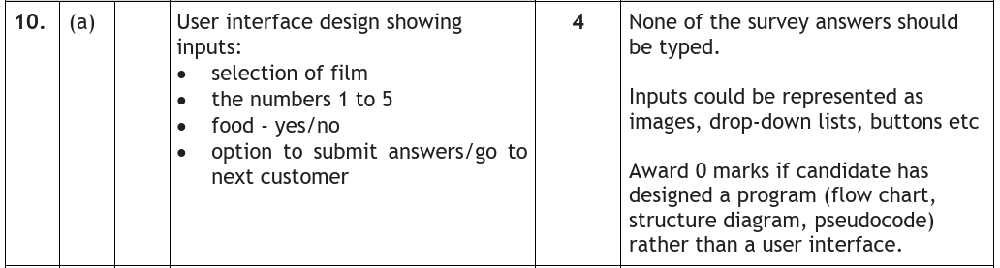
Two traps in the marking instructions are worth memorising. First: "Award 0 marks if the candidate has designed a program" — draw a flowchart or pseudocode here and you score nothing, no matter how good it is. Second: "None of the survey answers should be typed" — an entry box would ignore the touchscreen clue in the question. A text-based UI can be an acceptable answer to some design questions, but when the question names a touchscreen or asks for speed, stick to a graphical UI.
An example would be:
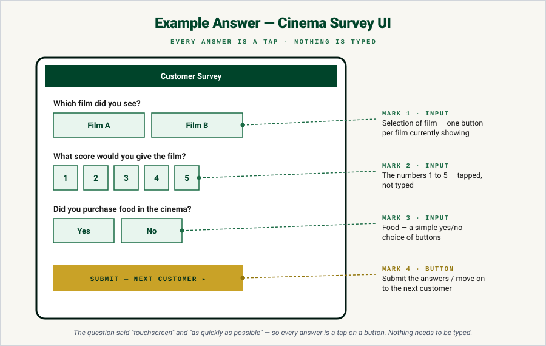
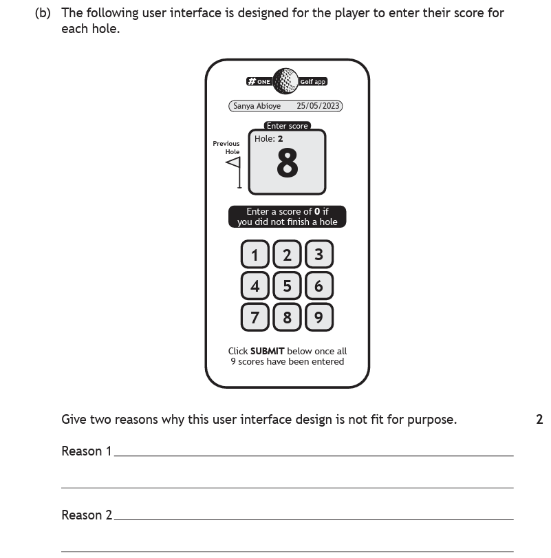
How to tackle it: The previous question asked us to design a UI, this one flips it round and asks us to evaluate one. The process is, read every instruction printed on the screen, then check the screen actually provides the function it promises. Everything missing is a reason in the answer.
- "Enter a score of 0 if you did not finish a hole" — but the keypad only has 1 to 9. There is no 0 button.
- "Click SUBMIT below once all 9 scores have been entered" — look below. There is no submit button.
- There's a Previous Hole arrow, but no Next Hole button — no way to move on and enter the next score.
- Finally, think about mistakes: tap an 8 instead of a 3 and there is no delete/backspace to correct it.
That's four valid reasons for a two-mark question — any two will do. Notice none of them are opinions about how the screen looks; "not fit for purpose" means the user cannot do something the app requires.
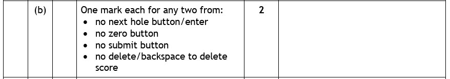
An example would be:
Reason 1 — the instructions say to enter a score of 0 if a hole was not finished, but the keypad has no 0 button. Reason 2 — the player is told to click SUBMIT once all scores are entered, but there is no submit button on the screen.
One Design, Three Notations
Now for the program's logic. There are three design notations at National 5, and the best way to understand them is to see the same program designed in all three.
Our program: ask the user for two test scores, add them together, and display the total. Watch how each notation describes exactly the same solution in its own way.
Structure Diagrams
A structure diagram breaks the task into smaller chunks, arranged in a hierarchy. It is always read top-to-bottom and left-to-right. You can draw them on paper or with a free tool such as draw.io.
Spot the pattern? The three boxes are the program's inputs → processes → outputs, straight from the analysis. Structure diagrams are brilliant at showing the big picture of a solution at a glance.
Structure diagram symbols
There are four symbols that can appear on a structure diagram:
| Symbol | Used for |
|---|---|
| Process | A step the program carries out, such as a calculation. |
| Loop | Shows that the steps below it repeat — a fixed number of times, or while a condition is met. |
| Selection | Shows the program branching, depending on a condition. |
| Pre-defined process | Shows the use of a pre-defined function or procedure. |
Here's a bigger example that puts the loop and selection symbols to work. Edinburgh Castle's ticket desk program (from the analysis page) now serves 20 tour groups in a row — and any group buying more than 10 tickets gets a 10% discount:
Reading it top-to-bottom, left-to-right: everything below the rounded loop symbol happens 20 times — once per group. The diamond makes a decision partway through each pass: the "Apply 10% discount" step below it only happens when the answer is yes; smaller groups skip it.
Flowcharts
A flowchart shows the same sequence of steps, but joined by arrows. You read it from top to bottom, following the arrows. Flowcharts work for any program, but they're especially good at showing decisions and loops clearly.
Here's our two-scores program again — same logic, different notation:
Flowchart symbols
- The rounded (terminal) symbols always mark the start and end.
- A parallelogram is used for input and output.
- A rectangle is used for any other task, such as a calculation.
- A diamond makes a decision — and decisions must have yes/no branches.
Flowcharts don't have a special loop symbol. Instead, a loop is drawn as a decision whose arrow points back up to an earlier step — the program keeps going round until the decision lets it escape. You'll see this in action on the Loops page.
Here's the same Edinburgh Castle tour groups program as a flowchart — the loop and the decision are both easy to spot:
Follow the arrows: the "More than 10 tickets?" diamond is the condition — big groups detour through the discount box, small groups go straight past. The "Served 20 groups?" diamond at the bottom is the loop: while the answer is No, the arrow sweeps all the way back up to "Get adult & child tickets" and the whole journey repeats. Only after the twentieth group does the Yes branch let the program reach Stop.
Pseudocode
Pseudocode plans the program line-by-line, in English, without writing actual code. There are no strict formatting rules — what matters is breaking the problem into clear, ordered steps. Here's our two-scores program one more time:
1 Ask the user to enter the two test scores 2 Add the two scores together 3 Display the total with a message
Same three steps as the structure diagram, same order as the flowchart. All three notations describe one algorithm — they just draw it differently.
And the bigger Edinburgh Castle tour groups program? Here it is one more time — compare it line by line with the structure diagram and the flowchart above:
1 Repeat 20 times (once for each tour group) 2 Get the number of adult and child tickets 3 Calculate the cost of the group's tickets 4 If the group has more than 10 tickets, take 10% off the cost 5 Display the total cost for the group 6 End repeat
The indented lines are the steps inside the loop — the same four steps that sat below the loop symbol in the structure diagram, and inside the loop-back arrow on the flowchart. Line 4 is the condition: one line of pseudocode, a diamond in both diagrams.
Stepwise Refinement
Look at step 1 above: "Ask the user to enter the two test scores." That's actually two things to code. Real problems are full of steps like this — too big to turn straight into a line of code. The fix is stepwise refinement: keep breaking big steps into smaller ones until each step is small enough to become a line or two of code.
In pseudocode, refinements are numbered after the step they expand — step 1 becomes 1.1, 1.2, and so on:
Algorithm 1 Ask the user to enter the two test scores 2 Add the two scores together 3 Display the total with a message Refinement 1.1 Ask the user to enter the first score 1.2 Ask the user to enter the second score 2.1 total is calculated as score1 + score2 3.1 Display "Your total mark is ", total
In a structure diagram, the same idea appears as a box splitting into smaller boxes below it. It's exactly the same thinking — big chunk, broken down.
Algorithm 1 Ask user to enter dimensions of a swimming pool in metres 2 Calculate volume of pool 3 Display message stating the volume of the pool Refinement 1.1 Ask user to enter length of pool 1.2 Ask user to enter width of pool 1.3 Ask user to enter depth of pool 2.1 Volume is calculated as length * width * depth 3.1 Display "The volume of the pool is", volume
Design Worked Examples
Design questions in the exam rarely stop at "name the notation". Once a diagram is in front of you, SQA can ask about anything in the course through it — loop types, conditions, variables and data types, standard algorithms, even efficiency. The design is just the wrapper.
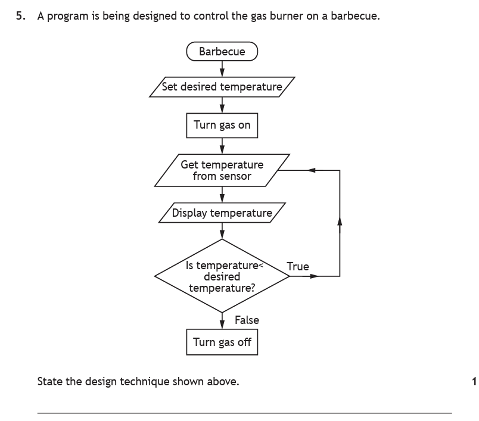
How to tackle it: A one-marker, but easy to throw away. The question asks us to name the design technique — so the answer is one of the three notations: structure diagram, flowchart or pseudocode. Symbols joined by arrows, with a decision diamond and a loop-back arrow: this is a flowchart.
Don't overthink it and start describing what the program does — the question only wants the technique named. And be precise: "flowchart" (or "flow diagram", which the markers accept) earns the mark; "a diagram" or naming individual symbols does not.
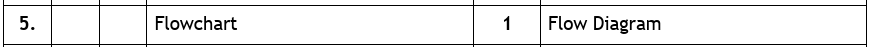
An example would be:
This design technique is a flowchart.
A sightseeing boat holds 100 passengers, with Saturday's tickets numbered 1–100 and Sunday's numbered 101–200. The program checks each passenger's ticket is valid for today as they board, and counts the passengers. Here is the design — read it carefully before opening each part:
![Past paper question: a structure diagram titled PROGRAM daily ticket analyser. Its branches are: set number of passengers to 0.00; get ticket range, which refines into get lower ticket number and get upper ticket number; a rounded loop symbol reading repeat until no more passengers, which contains get ticketNumber from passenger and a selection asking is ticketNumber within range for today, with yes leading to add 1 to number of passengers and no leading to display Ticket Refused; and finally display total number of passengers.](../resources/sdd/worked_examples/n5_des_q2-1.png)

a·iState the type of loop required when implementing this design.1 mark
How to tackle it: Find the loop symbol and read its wording: "repeat until no more passengers". The program doesn't know in advance how many passengers will board — it keeps going until a condition is met. That's a conditional loop. (If it said "repeat 100 times" it would be a fixed loop.)
An example would be:
A conditional loop — the design repeats until there are no more passengers, not a set number of times.
a·iiState the standard algorithm used in this design.1 mark
How to tackle it: Look for the fingerprint of a standard algorithm. The design sets the number of passengers to 0 at the start, then adds 1 inside the loop each time a valid ticket is found. Set a total to zero, add to it inside a loop — that's a running total.
An example would be:
A running total (within a loop) — the passenger count starts at 0 and 1 is added for each valid ticket.
a·iiiComplete the table matching examples from the design to programming constructs.3 marks
How to tackle it: Match each construct by its job. An assignment stores a value in a variable. A conditional statement asks a yes/no question. An arithmetic operation does maths. Now scan the design for each:
| Set totalPassengers to 0.00 | Assignment — a value is stored in a variable |
| is ticketNumber within range for today? | Conditional statement — a yes/no question |
| add one to number of passengers | Arithmetic operation — a calculation |
Here are the full marking instructions for all three parts — check your answers:
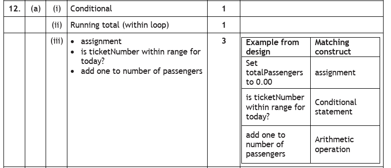
Remember the cinema survey app from the UI worked example? This is the very next part of that same question. Part a) asked us to design the survey screen; part b) shows SQA's own design for calculating each film's average score at the end of the day — and asks us to read it:
![Past paper question continued: a flowchart for the cinema app. Get film from touchscreen flows into add 1 to total customers, then a decision was film A selected. Yes leads to get score for film A and add score onto film A total. No leads to a second decision, was film B selected, whose yes branch leads to get score for film B and add score onto film B total. The branches merge into a decision, are there any more customers. Yes loops back to the start; no leads to two outputs displaying the average score for film A and film B, each calculated as film total divided by total customers.](../resources/sdd/worked_examples/n5_des_q3-1.png)
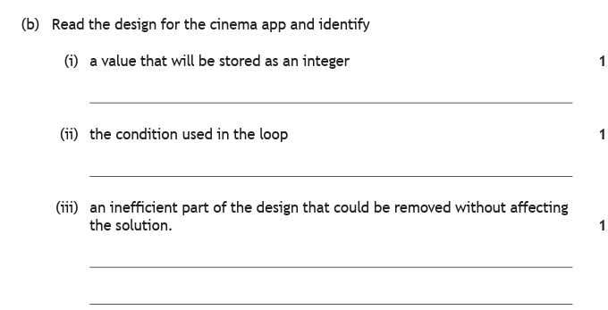
b·iIdentify a value that will be stored as an integer.1 mark
How to tackle it: An integer is a whole number. Hunt the design for values that could never have a decimal point: the total customers count, the score a customer gives (1–5), and each film's score total. Any one of them earns the mark. Watch out — the average score at the end is the trap: dividing gives a decimal, so that would be stored as a real.
An example would be:
Total customers — it is a count, so it will always be a whole number.
b·iiIdentify the condition used in the loop.1 mark
How to tackle it: A flowchart loop is a decision whose arrow points back up — so find the arrow that returns to an earlier step and read the diamond it comes from. Only one decision here loops back: "are there any more customers?". The other two diamonds (film A / film B) branch forwards, so they're selection, not the loop.
An example would be:
"Are there any more customers?" — while the answer is yes, the flow returns to the start.
b·iiiIdentify an inefficient part of the design that could be removed without affecting the solution.1 mark
How to tackle it: The cinema only shows two films. So if the answer to "was film A selected?" is no, it must have been film B — there's nothing else it could be. The second decision, "was film B selected?", can never answer no, so it can be removed and the design still works.
An example would be:
The "was film B selected?" decision — with only two films, a customer who didn't pick film A must have picked film B, so the check is unnecessary.
Here are the full marking instructions for all three parts — check your answers:
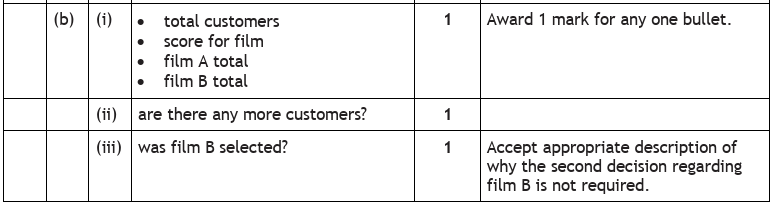
A flight booking app asks users to enter their departure and destination airports, dates, and the number of adults and children, then displays the total flight cost and trip duration. This question starts in analysis territory, then hands us a pseudocode design to refine — a reminder that one exam question can walk across several phases:
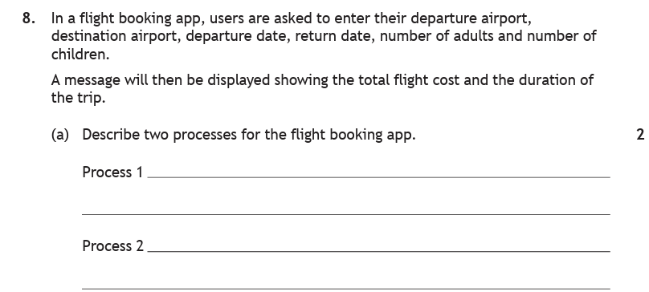
aDescribe two processes for the flight booking app.2 marks
How to tackle it: This is the same skill as the analysis page — a process is something the program works out from the data, not an input or an output. The stem tells us the app displays "the total flight cost and the duration of the trip", so the program must calculate both of those first. Validating the inputs (e.g. checking the return date is after the departure date) is also accepted.
An example would be:
Process 1 — calculate the total cost of the flights. Process 2 — calculate the duration of the trip from the departure and return dates.
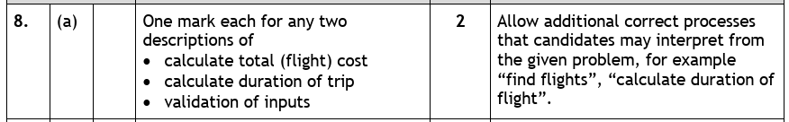
bEach passenger is asked if they want to add a bag (£7 each). Using a design technique of your choice, refine step 4.5 marks
First, the design we're given — step 4 is "Update cost of booking if bag(s) are added":
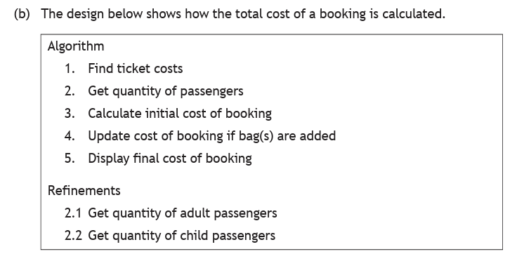
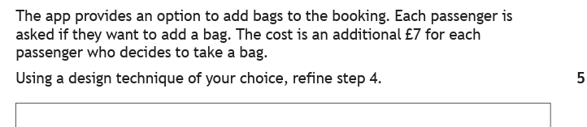
How to tackle it: "A design technique of your choice" — pseudocode is quickest to write. Five marks means five things the markers want to see, and the stem hands us all of them: each passenger is asked (that's a loop over the passengers, and an ask/input step), they decide yes or no (an if with the right condition), and £7 is added for each yes (a running total inside the loop), which must end up on the cost of the booking.
Number the refinements 4.1, 4.2… to show they expand step 4 — just like the refinement examples above.
An example would be:
4.1 Loop for each passenger 4.2 Ask if the passenger wants to add a bag 4.3 If the answer is yes then add £7 onto the bag total 4.4 End loop 4.5 Add the bag total onto the cost of the booking
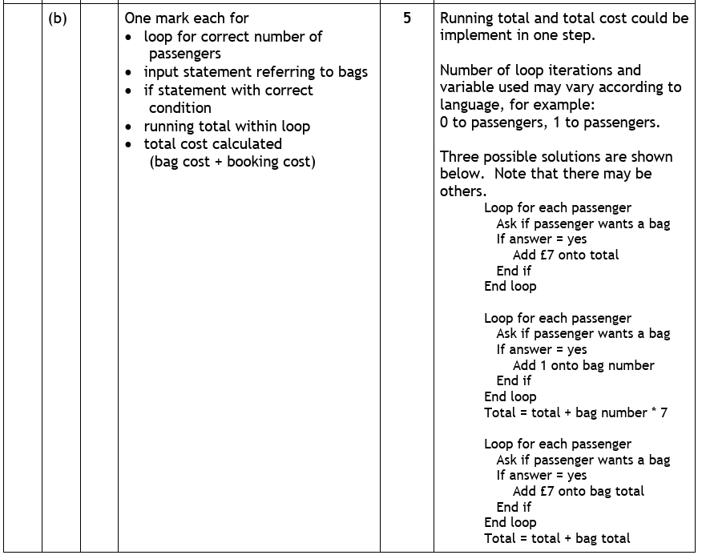
Notice from the marking instructions that several layouts score full marks — adding £7 straight onto the booking total inside the loop is fine too. What loses marks is missing a construct: no loop, no ask, no if, or no total.
Practice Questions
A school canteen is developing an app that lets pupils order lunch at a kiosk. Pupils will use a touchscreen to input and submit their order.
Pupils will be asked the following questions:
- Which of the three meal choices on today's menu would you like?
- Would you like a drink included?
- What rating would you give yesterday's lunch, from 1 to 5?
Queues must move as quickly as possible at lunchtime, so it is important that orders can be input as quickly as possible using the touchscreen.
Using the information above, design a user interface for this part of the app.
Marking Instructions
One mark each for a user interface design showing:
- selection of meal — one control per meal choice (buttons, images or a drop-down list)
- drink included — yes/no
- the numbers 1 to 5 for the rating
- an option to submit/confirm the order
None of the answers should be typed — the question says touchscreen and "as quickly as possible". Award 0 marks for a program design (flowchart, structure diagram or pseudocode) rather than a user interface.
A juice bar has designed a touchscreen kiosk for customers to order smoothies. The kiosk screen shows the following, and nothing else:
- the message "Tap a smoothie, then enter how many you would like (1–5)"
- one button for each of the four smoothies on the menu
- the message "Press PAY to finish your order"
- a HELP button
Give two reasons why this user interface design is not fit for purpose.
Marking Instructions
One mark each for any two from:
- no number buttons — there is no way to enter how many smoothies are wanted (1–5), even though the instruction asks for it
- no PAY button, even though the instruction says to press it
- no way to remove/cancel a smoothie tapped by mistake
The technique is the same as the golf app worked example: check every instruction on the screen against the controls actually provided.
A program design for a step-counter app is shown below.
Algorithm 1 Ask the user to enter their step target 2 Get today's step count from the sensor 3 Calculate the percentage of the target reached 4 Display the percentage with a message Refinement 3.1 percentage is calculated as (steps ÷ target) × 100
State the design technique shown above.
Marking Instructions
Pseudocode (1 mark) — a line-by-line plan written in structured English, with numbered refinements. Naming a different notation, or describing what the program does, earns no marks.
Look back at the Edinburgh Castle tour groups structure diagram in the Structure Diagrams section, then answer:
(a) State the type of loop used in the design.
(b) Identify the condition used in the design.
(c) Identify one example from the design of each of the following constructs: an arithmetic operation; a conditional statement.
Marking Instructions
(a) A fixed loop — the design repeats exactly 20 times, once per group (1 mark).
(b) "More than 10 tickets?" (1 mark).
(c) Arithmetic operation — calculate the cost of the group (or apply the 10% discount) (1 mark). Conditional statement — "more than 10 tickets?" (1 mark).
Look back at the Edinburgh Castle tour groups flowchart in the Flowcharts section, then answer:
(a) Identify a value in the design that will be stored as an integer.
(b) Identify the condition used in the loop.
(c) State what happens to a group buying 8 tickets.
Marking Instructions
(a) The number of adult tickets or the number of child tickets (or the count of groups served) — all whole numbers (1 mark). The cost of the group is the trap: prices have decimal places, so cost would be stored as a real.
(b) "Served 20 groups?" — while the answer is no, the flow returns to the input step (1 mark).
(c) The "more than 10 tickets?" decision answers no, so the group skips the discount — their cost is displayed unchanged (1 mark).
A cinema's snack kiosk program calculates the cost of a group's order. The design is shown below.
Algorithm 1 Get the number of people in the group 2 Calculate the ticket cost of the group 3 Update cost of order if snack combos are added 4 Display final cost of order
Each person in the group is asked if they would like a snack combo. A combo costs an additional £6 for each person who wants one.
Using a design technique of your choice, refine step 3.
Marking Instructions
One mark each for:
- a loop for the correct number of people
- an input/ask step referring to snack combos
- an if statement with the correct condition
- a running total within the loop
- the total cost calculated (combo cost + order cost)
Example solution:
3.1 Loop for each person in the group 3.2 Ask if the person wants a snack combo 3.3 If the answer is yes then add £6 onto the combo total 3.4 End loop 3.5 Add the combo total onto the cost of the order
As in the flight booking worked example, adding the £6 straight onto the order cost inside the loop also scores full marks.